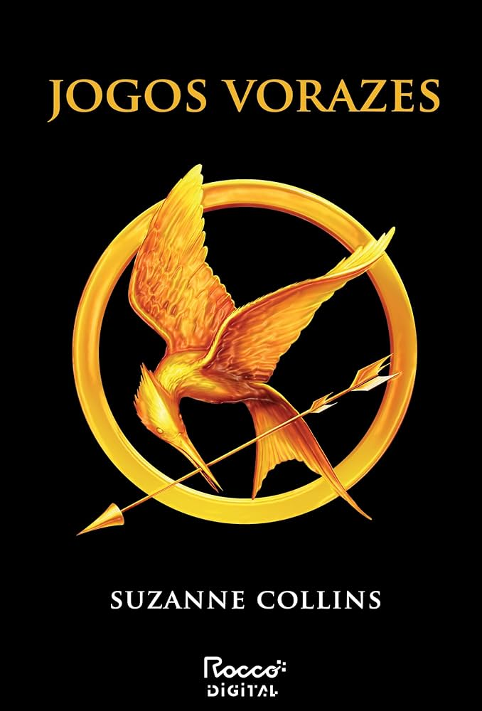

Jogos Vorazes
Suzanne Collins
Sobre o livro
Em um futuro distópico, Katniss Everdeen se oferece para participar dos Jogos Vorazes no lugar de sua irmã. Em uma competição na qual apenas um participante pode vencer, ela precisará lutar pela própria sobrevivência e enfrentar os desafios de uma sociedade desigual.
Gênero
Distopia
Ficção científica
Aventura
Disponível para empréstimo